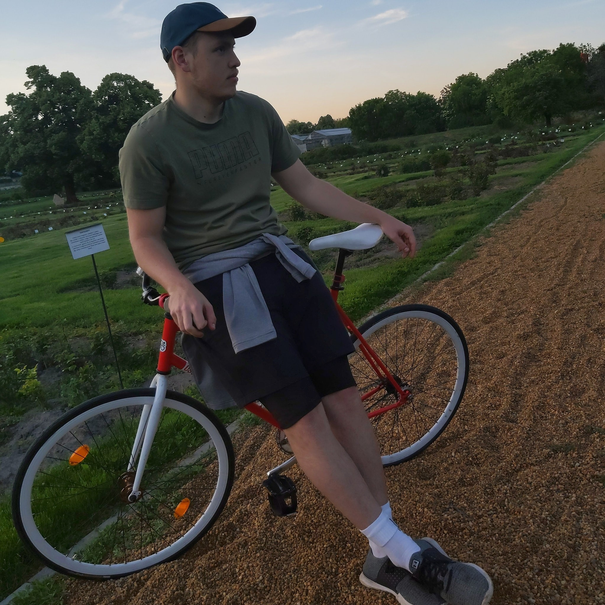

Tudj meg többet Rólam!

Önéletrajz:
Név: Váradi Boldizsár
Születési idő:Szeged, 1999.04.25
Telefonszám: 0630123456
Email cím: minta@gmail.com
Lakcím: 2330 Dunaharaszti
Tanulmányok:
- BME Gépészmérnöki szak BSC 2019-
- Szigetszentmiklósi Batthyány Kázmér Gimnázium 2011-2019
- Kőrösi Csoma Sándor álatlános iskola 2006-2011
Dokumentumok
- Érettségi bizonyítvány
- Angol középfokú nyelvvizsga
- Német középfokú nyelvvizsga
- Jogosítvány
Hobbi
A kedvenc szabadídős tevékenység a biciklizés. Ha tehetem mindenhova biciklivel megyek. Jelenleg egy aluminium vázas csepel fixie biciklim van. A fixiekről a következő oldalon számolok be részletesebben.
facebook oldalam

instagram oldalam